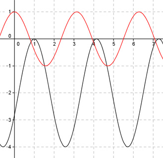

Aufgabe 275 Bestimmen Sie a und c für den dargestellten Graphen der Form y = a * cos (b * (x + c)) + d.  Abgelesen: Periode p = п (von 1 bis 4,14) 2п 2п |b| = ---- = ---- = 2 p п b = 2 oder -2 wegen cos(x) = cos(-x) acos(2(x + c)) + d oder acos(-2(x + c)) + d Verschiebung von Punkt (0|0) in (1|-2) --> Abgelesen: Verschiebung entlang x = 1 um -2 --> d = -2 acos(2(x + c)) - 2 oder acos(-2(x + c)) - 2 Abgelesen: Verschiebung entlang y = -2 um 1 nach rechts --> c = -1 acos(2(x - 1)) + 2 oder acos(-2(x - 1)) + 2 Abgelesen: |a| = 2 Keine Spiegelung an der x-Achse --> a = 2 --> y = 2cos(2(x - 1)) + 2 oder y = 2cos(-2(x - 1)) + 2 Zum Vergleich: cos(2x)